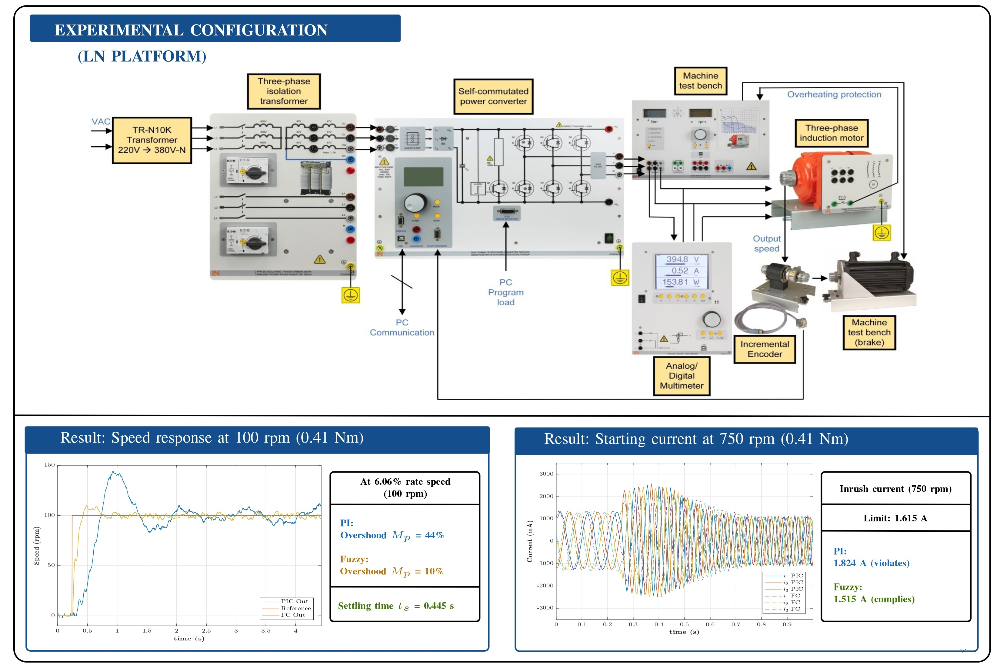
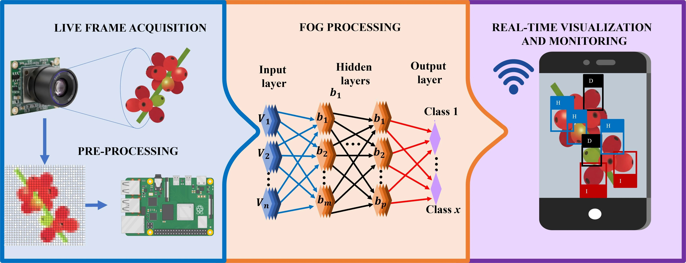
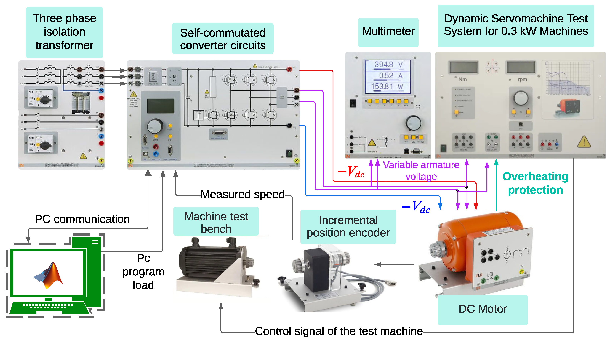
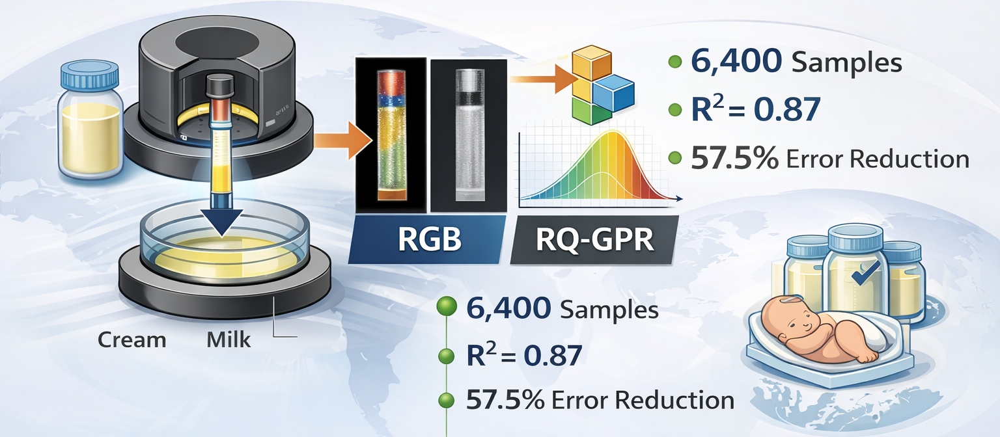
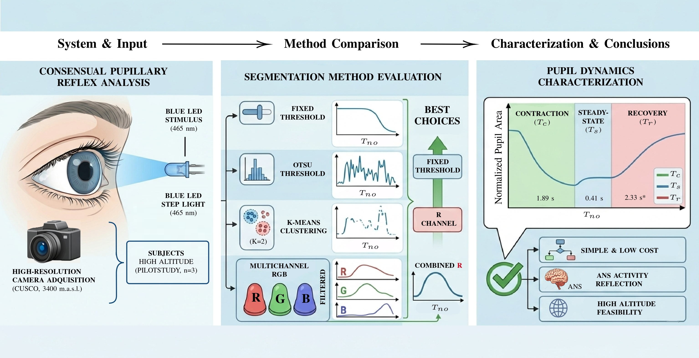
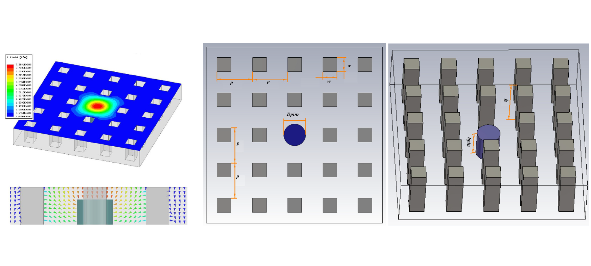

Research Updates
Selected scientific publications, applied research projects, and technological developments from EM Research & Tech.
Latest Publications & Projects
A curated collection of our most recent research contributions and engineering developments.

Fuzzy Logic Control for Low-Speed Motor Drives
Mamdani fuzzy V/f control with PSO for induction motors. Stable low-speed operation (6.06%) with improved dynamics over PI control.

Efficient Fog Computing for Coffee Pest Detection
Optimized YOLO models for Coffee Berry Borer detection. Best configuration: mAP@0.5 = 0.9446, 5.12 GFLOPs enabling real-time edge deployment.

Energy Systems Optimization
Advanced modelling techniques for energy efficiency and system optimization using data-driven approaches.

Intelligent Sensor Systems
Development of smart sensing architectures for real-time monitoring and data acquisition.

Computational Intelligence
Machine learning models applied to predictive systems and computational analysis.

Electronic Systems Design
Design and validation of advanced electronic systems for engineering applications.